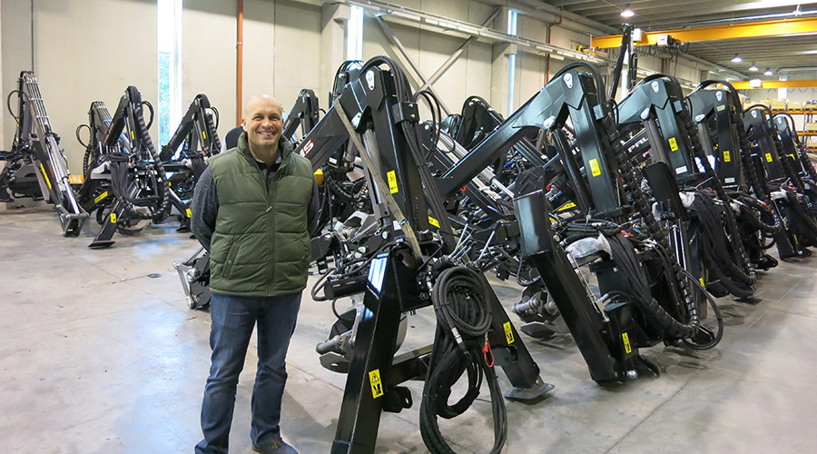
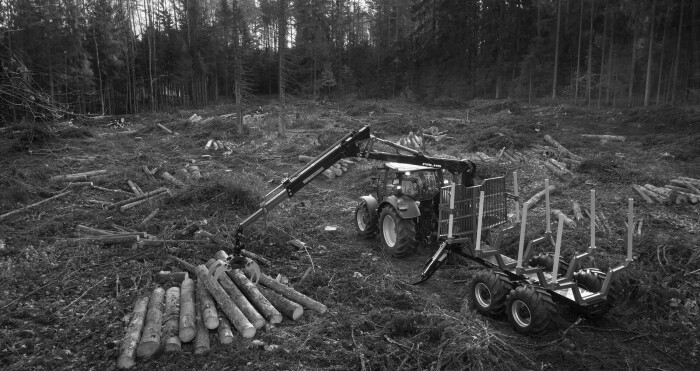
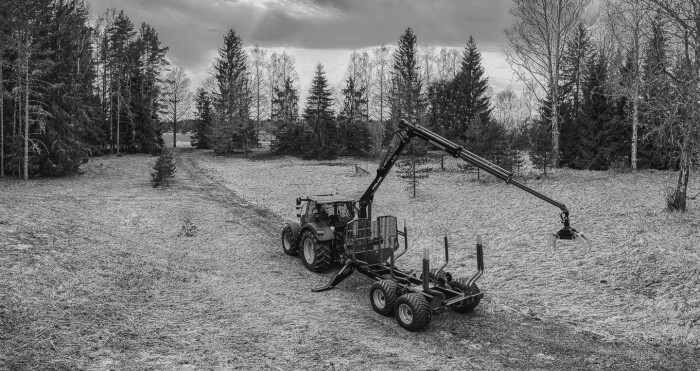

Vásárlási útmutató
Mire figyeljünk PALMS termék vásárlásakor?
Ismerje meg, milyen értékek mentén dolgozunk, és hogyan kísérjük ügyfeleinket a vásárlás után is.
Hasznos tudnivalók a PALMS gépekről, a választásról és a felszereltségről.
A Palmse Mehaanikakoda L.L.C (PALMS) egy családi vállalkozás, melyet 1992-ben alapított apa és fia. Napjainkban a PALMS az erdészeti pótkocsik és daruk egyik legnagyobb gyártója, nagy múlttal és tapasztalattal.
A négy alapvető érték, amelyre a PALMS épül: elhivatottság, innováció, termékminőség és érték. Ezek segítik a hatékony erdőgazdálkodást és a tartós ügyfélkapcsolatok kialakítását.

Válasszon témát, és ismerje meg a döntéshez szükséges legfontosabb tudnivalókat.
Ismerje meg, milyen értékek mentén dolgozunk, és hogyan kísérjük ügyfeleinket a vásárlás után is.

A PALMS pótkocsik három fő típusba sorolhatók. Segítünk eligazodni, hogy megtalálja az igényeinek megfelelő megoldást.

A széles választékban nem könnyű eligazodni. Cikkünk segít végiggondolni, milyen daru illik legjobban a munkájához.

Tudja meg, miért fontos a stabilitás, és hogyan válasszon a munkakörülményeinek megfelelő támasztólábat.